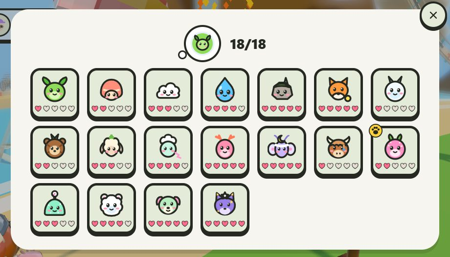
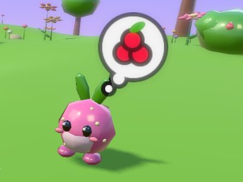
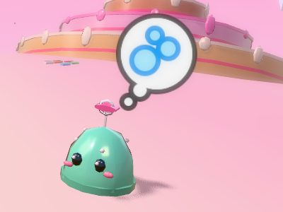
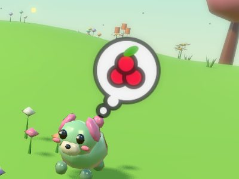
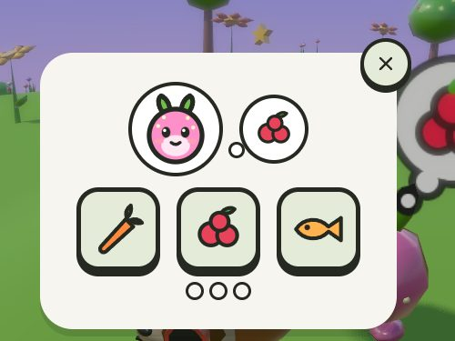

News
Meet the Wildlings: 18 little friends to find in Sloth Jam
· Strategic Sloth

Wildlings are little made-up creatures that live all over Sloth Jam. You never catch them and never fight them: you make friends. Five new ones arrived with the Cosmic Islands, one on each planet, so there are now 18 to find.
The five new Wildlings

Berrybun, a pink starberry bunny with leaf ears, on Starberry Planet 
Fizzlet, a mint gumdrop with a lollipop swirl, on Candy Comet Snowmop, a fluffy snow puff with round pink ears, on Frostfluff Moon 
Petalpup, a mint puppy with petal ears and a bud on its tail, on Bloomheart Twinkit, a violet fox kit flecked with gold stars, on Starlight Ruins
How to make friends with a Wildling
- Go to its home. Each Wildling always lives in the same place, at any time of day and in any weather.
- It is shy. The first two times you come close, it hops away to another hiding spot nearby. The third time it stays, and a thought bubble shows what it wants.
- Walk up to it and press the action button to open its card. It wants a snack, bubbles or a song:
- A snack: tap the treat it is thinking of, three times.
- Bubbles: pop eight bubbles as they float up.
- A song: it sings a few notes on colored stones, and you tap them back. If you slip, it plays the tune again.

There is no clock and no way to fail. When you are done, it jumps for joy and goes into your Wildling Book. A Wildling from one of the worlds or planets then moves to town, near the way to its home. The five planet Wildlings live around the rocket.
Walking together
One Wildling at a time walks with your sloth around town. It bounces when you hop, joins in with your emotes and naps if you sit still for a long time. Every minute or two it sniffs out a sparkle in the ground: press the action button to dig up a few coins, up to five finds a day.
Friendship grows in hearts, up to five, and never goes down. Pet your Wildling, walk together and play party games with it along to fill its hearts. At five hearts it gets its Bloom look, with flowers, sparkles or a brighter glow, and you can switch looks at any time.
Open the menu and tap the Wild button, a little green face with leaf ears, to see your Wildling Book. Pick who walks with you, and see dark shapes over pictures of the places where the ones you have not met yet live. Each friend also adds a Pal Card to the Wildlings page of your cards.
Where to find all 18
| Wildling | Where it lives | It wants |
|---|---|---|
| In town | ||
| Leaflet | The pines behind the gate | A snack |
| Shellipop | The south beach | A snack |
| Cloudkin | The music lawn, by the bandstand | A song |
| Bloop | The lagoon under the falls on Falls Isle | Bubbles |
| Pebblit | Tag Rock's lower terrace, by the Old Mine | Bubbles |
| Glowby | By the lighthouse on top of Tag Rock | A song |
| In the worlds | ||
| Frostling | Snowcap Peak, near where you arrive | A snack |
| Pinecub | Pinecone Ridge, by the start | A snack |
| Hayhop | Clover Vale, by the yard | A snack |
| Breezlet | The Sky Isle | A song |
| Coralee | The reef, on the sea bed by the ladder | Bubbles |
| Moonmote | The Moon, near the rocket | A song |
| Hornlet | Fjordhold, the Viking village | A song |
| On the Cosmic Islands (new) | ||
| Berrybun | Starberry Planet | A snack |
| Fizzlet | Candy Comet | Bubbles |
| Snowmop | Frostfluff Moon | A song |
| Petalpup | Bloomheart | A snack |
| Twinkit | Starlight Ruins | A song |
Need the planets? Here is how to reach them from the Moon.
Fair for everyone
Wildlings are friends, not power. No party game plays any differently with one along, so a player with no Wildlings and a player with all 18 play exactly the same rounds. They are never for sale, never random, and never get sad or run away.